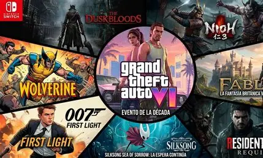

Los estrenos de videojuegos son eventos muy esperados por los jugadores, algunos tan llamativos coo el GTA VI, que ha generado una gran expectación en la comunidad gamer. Los estrenos de videojuegos suelen ser anunciados con meses de anticipación, y los jugadores esperan con ansias la fecha de lanzamiento. Algunos de los estrenos más esperados del año incluyen títulos como Horizon Forbidden West, God of War Ragnarok y Elden Ring. estos uegos que todo el mundo espera y estan ansiosos de jugar ya tienen hasta sus fechas de lanzamieno aunque el mas nombrado y famoso es el GTA VI, aun que en estos momentos esta pasado por situaciones dificiles por las filtraciones que han habido y no por parte de la empresa dueña de este juego (rockstar games) sino por un hacker, pero esto no es tema de esta seccion, volvamos a los estrenos. Al gunos de estos estrenos con sus fechas de salida se pueden observar en la tabla de abajo
| Juego | Fecha de lanzamiento | Plataforma |
|---|---|---|
| Hela | 1 de diciembre de 2026 | PC, XBOX SERIES, PS5, NINTENDO 2 |
| Forza horizon 6 | 18 de septiembre de 2026 | PC, XBOX SERIES |
| Gears of war e:day | 6 de octubre de 2026 | PC, XBOX SERIES |
| Marvel's Wolverine | 15 de septiembre de 2026 | PS5 |
| Juego | Fecha de lanzamiento | Plataforma |
|---|---|---|
| 007: Firts Light | 27 de mayo de 2026 | PC, XBOX SERIES, PS5, NINTENDO 2 |
| MOTORSLICE | 5 de mayo de 2026 | PC |
| Resident Evil Requiem | 27 de febrero de 2026 | PC, XBOX SERIES, PS5 |
| Crimson Desert | 19 de marzo de 2026 | PS5, XBOX SERIES, PC |